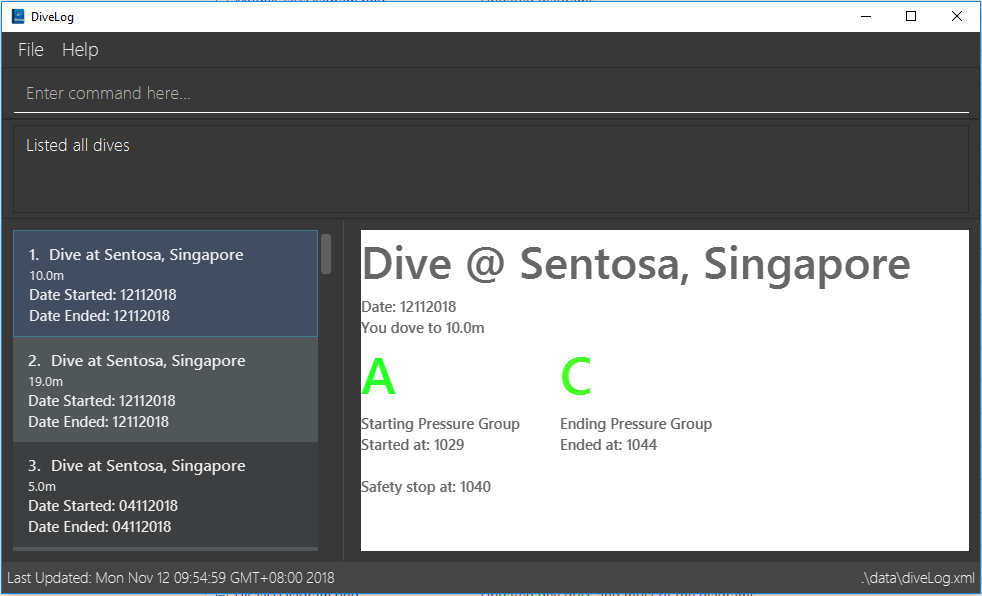

By: Team SE-EDU Since: Jun 2016 Licence: MIT
- 1. Introduction
- 2. Quick Start
- 3. Features
- 3.1. Viewing help :
help - 3.2. Adding a dive session:
add - 3.3. Listing all dives :
list - 3.4. Editing a dive :
edit - 3.5. Setting display units
set_units - 3.6. Locating dives by location:
find - 3.7. Deleting a dive :
delete - 3.8. Selecting a diveSession :
select - 3.9. Listing entered commands :
history - 3.10. Undoing previous command :
undo - 3.11. Redoing the previously undone command :
redo - 3.12. Clearing all entries :
clear - 3.13. Setting parameters to sort dives :
sortby[coming in V1.4] - 3.14. Planning Mode :
newplanornormalmode - 3.15. Exiting the program :
exit - 3.16. Saving the data
- 3.1. Viewing help :
- 4. About Pressure Groups in recreational diving
- 5. FAQ
1. Introduction
Divelog is a dive log for tracking dives.
Divelog provides a simple way for underwater divers to input details of their dives such as the time they spent at a particular depth, and the application will keep track of their nitrogen levels.
This allows divers to plan their next trip safely.
We use the PADI dive tables to calculate pressure groups for individual dives, whether the dive is the first dive
or a repeat dive of the day.
Pressure groups are a letter between A to Z which mark the nitrogen
concentration within a diver ("A" corresponds to a scenario where the diver is almost free of nitrogen).
As of v1.3, the pressure group is automatically calculated within a dive, all one needs to enter is their
current pressure group and their ending pressure group is automatically updated.
We are still working on the sortby
[sortby] feature coming in the upcoming release v1.4.
For more information on pressure groups (whether you are a recreational diver or looking to become one), you can find out more over at Section 4, “About Pressure Groups in recreational diving” and Section 5, “FAQ”.
2. Quick Start
-
Ensure you have Java version
9or later installed in your Computer. -
Download the latest
divelog.jarhere. -
Copy the file to the folder you want to use as the home folder for your Dive Log.
-
Double-click the file to start the app. The GUI (as seen in Diagram 1 below) should appear in a few seconds.
Diagram 1: Screenshot of GUI
-
Type the command in the command box (as seen in Diagram 2 below) and press Enter to execute it.
e.g. typinghelpand pressing Enter will open the help window.
Diagram 2: Command Box location
View Screenshot for location of command box
3. Features
Command Format
-
Words in
UPPER_CASEare the parameters to be supplied by the user e.g. inadd l/LOCATION,LOCATIONis a parameter which can be used asadd l/Sentosa. -
Items in square brackets are optional e.g
l/LOCATION [tz/TIMEZONE]can be used asl/Bali tz/+8or asl/Bali. -
Parameters can be in any order e.g. if the command specifies
pg/A d/10,d/10 pg/Ais also acceptable. -
A vertical bar
a|bmeans eitheraorbwill work as inputs.
3.1. Viewing help : help
Use this command to help window to see the user guide. Upon entering the command, a separate window with the user guide will open.
Format: help
Diagram 3: Enter the help command in the command box Diagram 4: The help guide will open up
View the flow for the help guide

| You can close the guide by closing it. This can be done by clicking on the X on the top right corner. |
Diagram 5: Click the X to close
View the screenshot for hwo to close the help guide.
3.2. Adding a dive session: add
Use this command to adds your new dive session to the Dive Log.
Format: add ds/DATE_STARTED ts/TIME_DIVE_STARTED de/DATE_ENDED te/TIME_DIVE_ENDED ss/SAFETY_STOP d/DEPTH l/LOCATION pg/INITIAL_PRESSURE_GROUP
| Words in UPPER_CASE are the parameters, items in SQUARE_BRACKETS are optional. Order of parameters are fixed as per the format above, meaning if you entered the ts/TIME_DIVE_STARTED before the ds/DATE_STARTED, the program will not be able to add your dive. |
Put a ts/ before the time started(24 hours format - HHMM), te/time ended (24 hours format - HHMM), d/depth (in metres), l/ location (location name), per dive at v1.0) (optional) and pg/initial pressure group.
Example: add ds/04082018 ts/0900 de/04082018 te/1020 ss/1015 d/15 l/Bukit Lagoon pg/C tz/+8
| Data | Prefix | Example |
|---|---|---|
Date started / Ended (DDMMYYYY) |
ds or de |
ds/04082018 or de/05082018 |
Time Started / Ended (HHMM) |
ts or te |
ts/0800 or te/0900 |
Location |
l |
l/Sentosa |
Depth (integer value) |
d |
d/18 |
Initial Pressure Group (Character Value) |
pg |
pg/A |
Timezone (in UTC) |
tz |
tz/+12 or tz/-5 |
3.3. Listing all dives : list
To display all the dives that you have previously recorded, list shows a list of all dives in the dive log.
To change the manner in which your dives are ordered, view [sortby]
Format: list
Diagram 6: List command
View Screenshot for list

3.4. Editing a dive : edit
If you made a mistake while adding a new dive, edit will come in handy.
edits edits an existing dive session in the Dive Log.
The only parameters you have to input are the data of that specific dive session at INDEX
Format: edit INDEX [ts/TIME_START] [te/TIME_END] [ss/SAFETY_STOP_TIME] [d/DEPTH] [pg/PG_AT_START][pge/PG_AT_END][l/LOCATION]…
Examples:
edit 1 pge/F l/Tioman
| Data | Prefix | Example |
|---|---|---|
Date started / Ended (DDMMYYYY) |
ds or de |
ds/04082018 or de/05082018 |
Time Started / Ended (HHMM) |
ts or te |
ts/0800 or te/0900 |
Location |
l |
l/Sentosa |
Depth (integer value) |
d |
d/18 |
Initial Pressure Group (Character Value) |
pg |
pg/A |
Timezone (in UTC) |
tz |
tz/+12 or tz/-5 |
3.5. Setting display units set_units
Switches between meters and feet. (App defaults to meters)
Format: set_units meters|feet
Example usage: set feet
3.6. Locating dives by location: find
Finds dives whose location contain any of the given keywords.
Format: find KEYWORD [MORE_KEYWORDS]
Examples:
-
find Bali
ReturnsDive at Bali
Diagram 7: Find command
View Screenshot for example of a successful find
3.7. Deleting a dive : delete
Deletes the specified dive from the Dive Log.
Format: delete INDEX
Examples:
-
list
delete 2
Deletes the 2nd dive in the Dive Log. -
find Bali
delete 1
Deletes the 1st dive in the results of thefindcommand.
3.8. Selecting a diveSession : select
Selects the dive identified by the index number used in the displayed dive list.
Format: select INDEX
Examples:
-
list
select 2
Selects the 2nd dive in the Dive Log. -
find Bali
select 1
Selects the 1st dive in the results of thefindcommand.
Diagram 8: Select command
View Screenshot for a successful select

3.9. Listing entered commands : history
Forgot what command you did just now and corrupted your data? Find our what command exactly did you execute
before you correct your data!
Format: history
|
Pressing the ↑ and ↓ arrows will display the previous and next input respectively in the command box. |
Diagram 9: History command
View Screenshot for a successful history command

3.10. Undoing previous command : undo
Restores the Dive Log to the state before the previous undoable command was executed.
Format: undo
|
Undoable commands: those commands that modify the Dive Log’s content ( |
Examples:
-
delete 1
list
undo(reverses thedelete 1command) -
select 1
list
undo
Theundocommand fails as there are no undoable commands executed previously. -
delete 1
clear
undo(reverses theclearcommand)
undo(reverses thedelete 1command)
3.11. Redoing the previously undone command : redo
Reverses the most recent undo command.
Format: redo
Examples:
-
delete 1
undo(reverses thedelete 1command)
redo(reapplies thedelete 1command) -
delete 1
redo
Theredocommand fails as there are noundocommands executed previously. -
delete 1
clear
undo(reverses theclearcommand)
undo(reverses thedelete 1command)
redo(reapplies thedelete 1command)
redo(reapplies theclearcommand)
3.12. Clearing all entries : clear
This command, as the name suggests, clears Dive Log of all your previous dive logs and
gives you a clean start to use Dive Log again!
Format: clear
use undo to, you’ve guessed it, undo your mistaken clear and restore all your deleted dive sessions.
Section 3.10, “Undoing previous command : undo”
|
3.13. Setting parameters to sort dives : sortby [coming in V1.4]
In V1.3, all dives are sorted automatically according to time and date by default.
Want to view your dives in ranked order by different options? Simply type sortby followed by a KEYWORD,
your following list, find commands will return you all your dive sessions in that particular order.
Format: sortby KEYWORD
| You can only use the specific keywords below. |
| Parameter Type | Keyword |
|---|---|
Time |
time |
Location (lexicographical) |
location |
Duration of Dive |
duration |
3.14. Planning Mode : newplan or normalmode
The planning mode is a temporary space for you to plan trips and to simulate dives. This is especially important if you
are planning on a multiple day diving trip!
When you enter the planning mode, simply enter simulation dives as per how you would use the other commands normally.
When you exit, all your simulation files will be deleted automatically. In the Current V1.3,
planning mode only supports add, delete and edit commands
[Coming in V1.4] To convert your simulation files to the actual mode, type convert
Format: newplan to enter Planning Mode, normalmode to exit planning mode.
| When you exit the planning mode, you will return to the state before you entered. |
3.15. Exiting the program : exit
Finished using Dive Log? This command shuts down Dive Log, and saves your new dive session data for your next use.
Format: exit
3.16. Saving the data
Worry not! Dive Log saves all your data in the hard disk automatically after any command that changes the data.
There is absolutely no need to save manually.
4. About Pressure Groups in recreational diving

Diagram 10: PADI Recreational Dive Planner, Table 1 (No Decompression Limits and Group Designation Table)
and Table 2 (Surface Interval Credit Table)
Diagram 11: PADI Recreational Dive Planner, Table 3 (Repetitive Dive Timetable)
The three PADI tables as shown in the above two diagrams (Diagram 10 and 11) are normally carried along by recreational divers for them to calculate their pressure group manually.
Workflow of a recreational diver who wants to check out his/her pressure group:
-
For the diver’s first dive of the day, the diver dives to a depth of 19 metres for 29 minutes. Referring to Diagram 7, Table 1 (No Decompression Limits and Group Designation Table), the diver would find the depth (19) at the top row. There is no 19 metres in the table, so the closest rounded-up value is 20 metres. He would then go down that 20m column until he finds 29 minutes, or the closest rounded up value which is 30 minutes. The diver will then draw his finger along the row to the left to match a character, which is "M". His new pressure group is now "M".
-
For the diver’s second and subsequent dives of the day, he would have to refer to table 3 in diagram 8 (Repetitive Dive Timetable). The diver wants to dive to 10 metres for 15 minutes for his second dive. The diver has already surfaced for three hours, which is the minimum time for any pressure group to reach the minimum "A" pressure group, as per Table 2 in Diagram 7 (Surface Interval Credit Table). Finding his current pressure group "A" on the top row of Table 3, he would match the depth he wants to dive to (10m), and get the values 10 at the top and 209 at the bottom. 10 minutes refer the Residual Nitrogen Time (RNT) and 209 minutes refer to the adjusted no decompression limits. The diver has to add the RNT value (10) to his intended/actual diving time (15 minutes), giving a total of 25 minutes Total Bottom Time (TBT). Going back to Table 1, for a depth of 10 metres and 25 minutes TBT, his new pressure group would be "C".
5. FAQ
Q: How do I transfer my data to another Computer?
A: Install the app in the other computer and overwrite the empty data file it creates with the file that contains the data of your previous Dive Log folder.
Q: Where can I find out more about PADI dive tables?
A: The 36-page long Instructions for Use official document can be found https://elearning.padi.com/company0/tools/RDP%20InsforUseMet.pdf